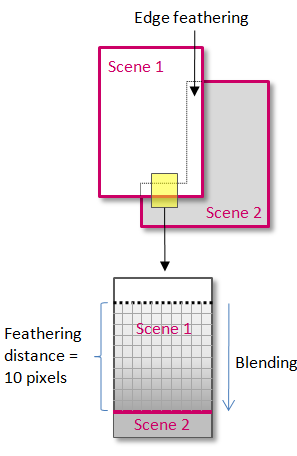

4 Remote sensing data
4.1 Summary
4.1.1 Corrections
Occasionally remotely sensed images can contain flaws from the sensor, the atmopshere, the terrain …
- Geometric correction
identify Ground Control Points (GPS) - take the coordinates and model them -linear regression match the distorted image with the gold standard image - plot these and try to minimise the RMSE
- Atmospheric correction
Unnecessary: Classification of a single image, Independent classification of multi date imagery, Composite images (combining images), Single dates or where training data extracted from all data
Necessary: Biophysical parameters needed (e.g. temperature, leaf area index, NDVI), Using spectral signatures through time and space
*But it is best to do both
Types:
Relative： 1.Normalize intensities of different bands within a single image 2.Normalise intensities of bands from many dates to one date 3.Dark object subtraction (DOS) or histogram adjustment 4.Psuedo-invariant Features (PIFs)
Absolute (definitive)： atmospheric radiative transfer models, require: An atmopsheric model (summer, tropical), Local atmopsheric visibility-from a weather station;Image altitude
- Orthorectification/Topographic correction
Requires: Sensor geometry; An elevation model (Atmospheric correction happens before topographic correction)
- Radiometric correction
Digital Number(Sensors capture image brightness and distributed) to spectral radiance(the amount of light within a band from a sensor in the field of view (FOV))
*Fortunately, some satellite products report corrected data such as Landsat ARD, LEDPAS, L8SR, LaSRC…., which can be used directly.
4.1.2 Joining data sets (Mosaicking/enhancements)
- Mosaicking
feather the images together, creates a seamless mosaic or image(s)

Source:Harris Geospatial
- Image Enhancement
Contrast Enhancement: Minimum - Maximum, Percentage Linear and Standard Deviation, Piecewise Linear Contrast Stretch,
Other enhancements: Ratio, Low pass or low frequency, High pass or high frequency, Edge enhancement, PCA, Texture, Fusion(Pan sharpen,Data Fusion)
*Light toned areas appearing lighter and dark areas appearing darker, making visual interpretation much easier.To target different image features, such as the input range is not uniformly distributed, choose different enhancement methods.
4.2 Applications
- The processing steps, in which the data fusion applied, are:
1.acquisition of image(s) and pre-processing of sensor/image metadata (useless for empirical models);
2.acquisition of the ground data (control/check/pass) with 2D image coordinates and 3D map coordinates;
3.computation of the mathematical models, in which the different data are fused for each image;
4.image(s) rectification preferably with elevation data (contour lines, DEM).(Grodecki and Dial 2003)
The main advantage is that geometric correction is viewed as a complete process, rather than the different steps of this complete and complex process being viewed and addressed individually and independently.
- Texture and PCA
This article performs 4 change detection analyzes (image difference, image ratio, regression analysis and PCA) on all exported texture images, bittemporal PCA for the texture feature energy proved to be the best results. (Tomowski et al., n.d.)
The problem is that the test area used was ideal to show the possibility of texture change analysis, the area most of the buildings are completely destroyed, there is no texture on the location of the destroyed buildings.
4.3 Reflection
When I used to refer to the existing buildings in urban design, I found that the position and shape of the buildings in the satellite photos were deformed, so it is necessary to perform geo-calibration first. But in fact, there is no way to restore it to the plane 100%, because there is still the influence of plane projection.
The enhancements should consider the size and complexity of the research scope, the larger and more complex the scope, the more information the enhancements may miss